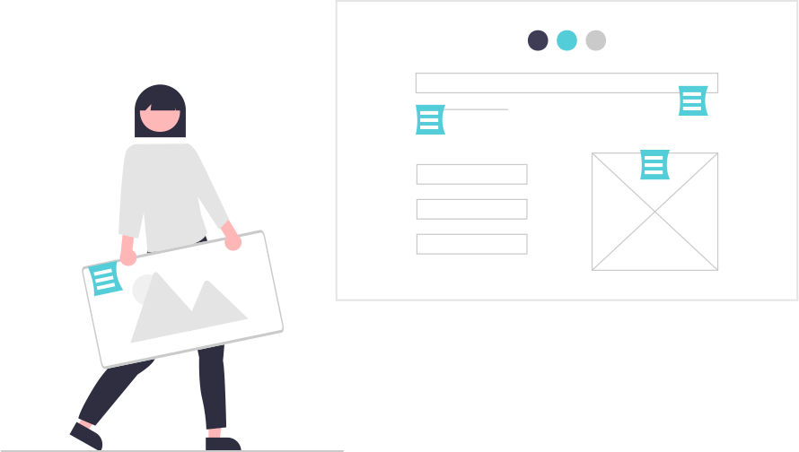

Características
Las infografías simplifican la información compleja y hacen que sea más fácil de digerir para la persona promedio. Son excelentes para todo tipo de negocios, incluso los "aburridos", y son una táctica de marketing en Internet muy útil. Se sabe que están de moda, son una excelente manera de comunicarse con su audiencia e incluso ganárselos.
Para garantizar el éxito de una infografía debemos tener en cuenta el objetivo principal por el que se crea. Por esta razón, se debe analizar el público al que se dirige, la información relevante que se quiere plasmar y el contexto en el que se utilizará. Además, una correcta infografía debe tener las siguientes características:
-
El diseño debe estar en concordancia con el contenido y los usuarios.
-
La información plasmada tiene que ser clara y concisa.
-
La información de la infografía debe presentarse secuencialmente para que con una visualización rápida y sin más información adicional, se comprenda fácilmente.
-
Los recursos utilizados tienen que aportar valor al contenido.
-
La tipografía ha de ser legible para facilitar su lectura.
-
La paleta de colores utilizada debe buscar un equilibrio entre el contenido y su utilización.
-
La fragmentación del contenido tiene que estar bien definida dentro de la infografía.
